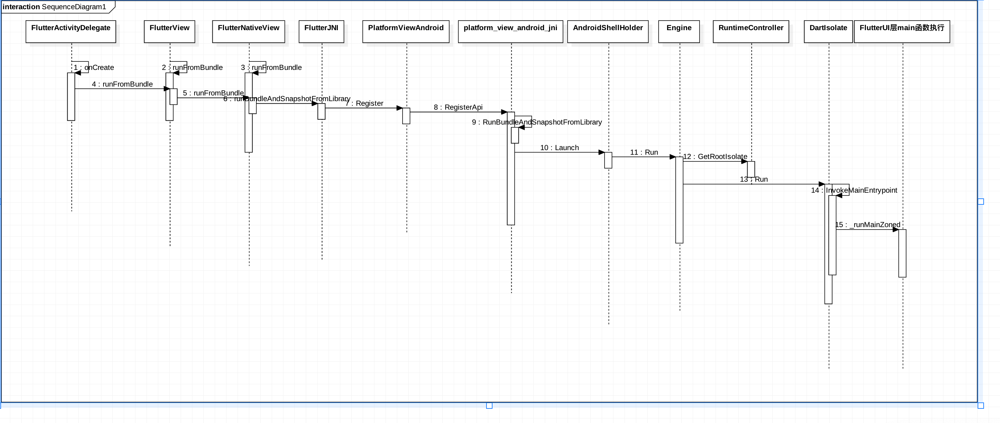

FlutterEngine:run 启动过程¶
在Android端启动过程中io/flutter/app/FlutterActivityDelegate.class调用onCreate进行初始化,在FlutterEngine初始化的时候已经分析了FlutterEngine初始化的过程，Android的SurferView也已经添加到了Flutter引擎中，但是此时、flutterengine还没有启动，接下继续分析一下Flutter真正加载Dart代码的过程

public void onCreate(Bundle savedInstanceState) { if (VERSION.SDK_INT >= 21) { Window window = this.activity.getWindow(); window.addFlags(-2147483648); window.setStatusBarColor(1073741824); window.getDecorView().setSystemUiVisibility(1280); } String[] args = getArgsFromIntent(this.activity.getIntent()); FlutterMain.ensureInitializationComplete(this.activity.getApplicationContext(), args); this.flutterView = this.viewFactory.createFlutterView(this.activity); if (this.flutterView == null) { FlutterNativeView nativeView = this.viewFactory.createFlutterNativeView(); this.flutterView = new FlutterView(this.activity, (AttributeSet)null, nativeView); this.flutterView.setLayoutParams(matchParent); this.activity.setContentView(this.flutterView); this.launchView = this.createLaunchView(); if (this.launchView != null) { this.addLaunchView(); } } ///开始正在加载Dart代码 if (!this.loadIntent(this.activity.getIntent())) { String appBundlePath = FlutterMain.findAppBundlePath(); if (appBundlePath != null) { this.runBundle(appBundlePath); } } } ## loadIntent 可以在启动Activity的时候这顶初始化路由 ```java private boolean loadIntent(Intent intent) { String action = intent.getAction(); if ("android.intent.action.RUN".equals(action)) { String route = intent.getStringExtra("route"); String appBundlePath = intent.getDataString(); if (appBundlePath == null) { appBundlePath = FlutterMain.findAppBundlePath(); } if (route != null) { this.flutterView.setInitialRoute(route); } this.runBundle(appBundlePath); return true; } else { return false; } }
Engine: run的相关参数
FlutterIU层中的入口就是在这里设置的，下面这些地方是我们通过配置来改变，flutter参数的地方
1.Apk中抽取的代码保存的位置
2.FlutterUI main函数的入口，也就是说我们可以随意的改动Flutter代码的入口函数名称，后面在分析Engine侧查找Main函数的逻辑
```java
///Apk中抽取的代码保存的位置
private static String sFlutterAssetsDir = "flutter_assets";
private void runBundle(String appBundlePath) {
if (!this.flutterView.getFlutterNativeView().isApplicationRunning()) {
FlutterRunArguments args = new FlutterRunArguments();
args.bundlePath = appBundlePath;
///Flutter main函数的入口，也就是说我们可以随意的改动Flutter代码的入口函数名称，后面在分析Engine侧查找Main函数的逻辑
args.entrypoint = "main";
this.flutterView.runFromBundle(args);
}
}
nativeRunBundleAndSnapshotFromLibrary¶
FlutterJNI中调用native方法进行调用FlutterEngine的本地方法
@UiThread public void runBundleAndSnapshotFromLibrary(@NonNull String bundlePath, @Nullable String entrypointFunctionName, @Nullable String pathToEntrypointFunction, @NonNull AssetManager assetManager) { this.ensureRunningOnMainThread(); this.ensureAttachedToNative(); this.nativeRunBundleAndSnapshotFromLibrary(this.nativePlatformViewId, bundlePath, entrypointFunctionName, pathToEntrypointFunction, assetManager); }
PlatformViewAndroid 初始化¶
Android启动的时候回使用System.library加载Flutter.so库，加载完成会自动调用JNI_OnLoad进行初始化
// This is called by the VM when the shared library is first loaded. JNIEXPORT jint JNI_OnLoad(JavaVM* vm, void* reserved) { // Initialize the Java VM. fml::jni::InitJavaVM(vm); JNIEnv* env = fml::jni::AttachCurrentThread(); bool result = false; // Register FlutterMain. result = shell::FlutterMain::Register(env); FML_CHECK(result); // Register PlatformView result = shell::PlatformViewAndroid::Register(env); FML_CHECK(result); // Register VSyncWaiter. result = shell::VsyncWaiterAndroid::Register(env); FML_CHECK(result); return JNI_VERSION_1_4; }
platform_view_android_jni 中注册的本地方法代码engine/src/flutter/shell/platform/android/platform_view_android_jni.cc注册本地代码回调逻辑
{ ///这个是我们真正关心的FlutterEngine启动过程中调用的逻辑
.name = "nativeRunBundleAndSnapshotFromLibrary",
.signature = "(J[Ljava/lang/String;Ljava/lang/String;"
"Ljava/lang/String;Landroid/content/res/AssetManager;)V",
.fnPtr =
reinterpret_cast<void*>(&shell::RunBundleAndSnapshotFromLibrary),
},
bool RegisterApi(JNIEnv* env) { static const JNINativeMethod flutter_jni_methods[] = { // Start of methods from FlutterNativeView { .name = "nativeAttach", .signature = "(Lio/flutter/embedding/engine/FlutterJNI;Z)J", .fnPtr = reinterpret_cast<void*>(&shell::AttachJNI), }, { .name = "nativeDestroy", .signature = "(J)V", .fnPtr = reinterpret_cast<void*>(&shell::DestroyJNI), }, { ///这个是我们真正关心的FlutterEngine启动过程中调用的逻辑 .name = "nativeRunBundleAndSnapshotFromLibrary", .signature = "(J[Ljava/lang/String;Ljava/lang/String;" "Ljava/lang/String;Landroid/content/res/AssetManager;)V", .fnPtr = reinterpret_cast<void*>(&shell::RunBundleAndSnapshotFromLibrary), }, { .name = "nativeGetObservatoryUri", .signature = "()Ljava/lang/String;", .fnPtr = reinterpret_cast<void*>(&shell::GetObservatoryUri), }, { .name = "nativeDispatchEmptyPlatformMessage", .signature = "(JLjava/lang/String;I)V", .fnPtr = reinterpret_cast<void*>(&shell::DispatchEmptyPlatformMessage), }, { .name = "nativeDispatchPlatformMessage", .signature = "(JLjava/lang/String;Ljava/nio/ByteBuffer;II)V", .fnPtr = reinterpret_cast<void*>(&shell::DispatchPlatformMessage), }, { .name = "nativeInvokePlatformMessageResponseCallback", .signature = "(JILjava/nio/ByteBuffer;I)V", .fnPtr = reinterpret_cast<void*>( &shell::InvokePlatformMessageResponseCallback), }, { .name = "nativeInvokePlatformMessageEmptyResponseCallback", .signature = "(JI)V", .fnPtr = reinterpret_cast<void*>( &shell::InvokePlatformMessageEmptyResponseCallback), }, // Start of methods from FlutterView { .name = "nativeGetBitmap", .signature = "(J)Landroid/graphics/Bitmap;", .fnPtr = reinterpret_cast<void*>(&shell::GetBitmap), }, { .name = "nativeSurfaceCreated", .signature = "(JLandroid/view/Surface;)V", .fnPtr = reinterpret_cast<void*>(&shell::SurfaceCreated), }, { .name = "nativeSurfaceChanged", .signature = "(JII)V", .fnPtr = reinterpret_cast<void*>(&shell::SurfaceChanged), }, { .name = "nativeSurfaceDestroyed", .signature = "(J)V", .fnPtr = reinterpret_cast<void*>(&shell::SurfaceDestroyed), }, { .name = "nativeSetViewportMetrics", .signature = "(JFIIIIIIIIII)V", .fnPtr = reinterpret_cast<void*>(&shell::SetViewportMetrics), }, { .name = "nativeDispatchPointerDataPacket", .signature = "(JLjava/nio/ByteBuffer;I)V", .fnPtr = reinterpret_cast<void*>(&shell::DispatchPointerDataPacket), }, { .name = "nativeDispatchSemanticsAction", .signature = "(JIILjava/nio/ByteBuffer;I)V", .fnPtr = reinterpret_cast<void*>(&shell::DispatchSemanticsAction), }, { .name = "nativeSetSemanticsEnabled", .signature = "(JZ)V", .fnPtr = reinterpret_cast<void*>(&shell::SetSemanticsEnabled), }, { .name = "nativeSetAccessibilityFeatures", .signature = "(JI)V", .fnPtr = reinterpret_cast<void*>(&shell::SetAccessibilityFeatures), }, { .name = "nativeGetIsSoftwareRenderingEnabled", .signature = "()Z", .fnPtr = reinterpret_cast<void*>(&shell::GetIsSoftwareRendering), }, { .name = "nativeRegisterTexture", .signature = "(JJLandroid/graphics/SurfaceTexture;)V", .fnPtr = reinterpret_cast<void*>(&shell::RegisterTexture), }, { .name = "nativeMarkTextureFrameAvailable", .signature = "(JJ)V", .fnPtr = reinterpret_cast<void*>(&shell::MarkTextureFrameAvailable), }, { .name = "nativeUnregisterTexture", .signature = "(JJ)V", .fnPtr = reinterpret_cast<void*>(&shell::UnregisterTexture), }, };
RunBundleAndSnapshotFromLibrary¶
1.加载配置文件
2.启动FlutterEngine
3.在前面介绍的android传入的参数，设置FlutterEngine真正加载Dart代码，执行第一个FlutterUI框架的入口文件
static void RunBundleAndSnapshotFromLibrary(JNIEnv* env, jobject jcaller, jlong shell_holder, jobjectArray jbundlepaths, jstring jEntrypoint, jstring jLibraryUrl, jobject jAssetManager) { auto asset_manager = std::make_shared<blink::AssetManager>(); for (const auto& bundlepath : fml::jni::StringArrayToVector(env, jbundlepaths)) { if (bundlepath.empty()) { continue; } // If we got a bundle path, attempt to use that as a directory asset // bundle or a zip asset bundle. const auto file_ext_index = bundlepath.rfind("."); if (bundlepath.substr(file_ext_index) == ".zip") { asset_manager->PushBack(std::make_unique<blink::ZipAssetStore>( bundlepath, "assets/flutter_assets")); } else { asset_manager->PushBack( std::make_unique<blink::DirectoryAssetBundle>(fml::OpenDirectory( bundlepath.c_str(), false, fml::FilePermission::kRead))); // Use the last path component of the bundle path to determine the // directory in the APK assets. const auto last_slash_index = bundlepath.rfind("/", bundlepath.size()); if (last_slash_index != std::string::npos) { auto apk_asset_dir = bundlepath.substr( last_slash_index + 1, bundlepath.size() - last_slash_index); asset_manager->PushBack(std::make_unique<blink::APKAssetProvider>( env, // jni environment jAssetManager, // asset manager std::move(apk_asset_dir)) // apk asset dir ); } } } auto isolate_configuration = CreateIsolateConfiguration(*asset_manager); if (!isolate_configuration) { FML_DLOG(ERROR) << "Isolate configuration could not be determined for engine launch."; return; } RunConfiguration config(std::move(isolate_configuration), std::move(asset_manager)); { auto entrypoint = fml::jni::JavaStringToString(env, jEntrypoint); auto libraryUrl = fml::jni::JavaStringToString(env, jLibraryUrl); if ((entrypoint.size() > 0) && (libraryUrl.size() > 0)) { config.SetEntrypointAndLibrary(std::move(entrypoint), std::move(libraryUrl)); } else if (entrypoint.size() > 0) { config.SetEntrypoint(std::move(entrypoint)); } } ANDROID_SHELL_HOLDER->Launch(std::move(config)); }
AndroidShellHolder 在UI线程启动FlutterEngine¶
void AndroidShellHolder::Launch(RunConfiguration config) { if (!IsValid()) { return; } shell_->GetTaskRunners().GetUITaskRunner()->PostTask( fml::MakeCopyable([engine = shell_->GetEngine(), // config = std::move(config) // ]() mutable { FML_LOG(INFO) << "Attempting to launch engine configuration..."; if (!engine || engine->Run(std::move(config)) == shell::Engine::RunStatus::Failure) { FML_LOG(ERROR) << "Could not launch engine in configuration."; } else { FML_LOG(INFO) << "Isolate for engine configuration successfully " "started and run."; } })); }
Engine::Run¶
1.PrepareAndLaunchIsolate 预处理一下运行环境
2.获取初始化的GetRootIsolate
3.获取DartState状态
4.添加AddIsolateShutdownCallback回调方法
Engine::RunStatus Engine::Run(RunConfiguration configuration) { if (!configuration.IsValid()) { FML_LOG(ERROR) << "Engine run configuration was invalid."; return RunStatus::Failure; } auto isolate_launch_status = PrepareAndLaunchIsolate(std::move(configuration)); if (isolate_launch_status == Engine::RunStatus::Failure) { FML_LOG(ERROR) << "Engine not prepare and launch isolate."; return isolate_launch_status; } else if (isolate_launch_status == Engine::RunStatus::FailureAlreadyRunning) { return isolate_launch_status; } std::shared_ptr<blink::DartIsolate> isolate = runtime_controller_->GetRootIsolate().lock(); bool isolate_running = isolate && isolate->GetPhase() == blink::DartIsolate::Phase::Running; if (isolate_running) { tonic::DartState::Scope scope(isolate.get()); if (settings_.root_isolate_create_callback) { settings_.root_isolate_create_callback(); } if (settings_.root_isolate_shutdown_callback) { isolate->AddIsolateShutdownCallback( settings_.root_isolate_shutdown_callback); } } return isolate_running ? Engine::RunStatus::Success : Engine::RunStatus::Failure; }
DartIsolate Run方法¶
1.初始化当前的Scope
2.获取加载的Dart库文件Dart_RootLibrary上一篇中已经介绍了加载库文件
3.解析入口文件
FML_WARN_UNUSED_RESULT bool DartIsolate::Run(const std::string& entrypoint_name) { TRACE_EVENT0("flutter", "DartIsolate::Run"); if (phase_ != Phase::Ready) { return false; } tonic::DartState::Scope scope(this); auto user_entrypoint_function = Dart_GetField(Dart_RootLibrary(), tonic::ToDart(entrypoint_name.c_str())); if (!InvokeMainEntrypoint(user_entrypoint_function)) { return false; } phase_ = Phase::Running; FML_DLOG(INFO) << "New isolate is in the running state."; return true; }
DartIsolate InvokeMainEntrypoint¶
-
_getStartMainIsolateFunction 查找主Isolate文件句柄
-
查找dart:ui库中的入口文件
_runMainZoned
static bool InvokeMainEntrypoint(Dart_Handle user_entrypoint_function) { if (tonic::LogIfError(user_entrypoint_function)) { FML_LOG(ERROR) << "Could not resolve main entrypoint function."; return false; } Dart_Handle start_main_isolate_function = tonic::DartInvokeField(Dart_LookupLibrary(tonic::ToDart("dart:isolate")), "_getStartMainIsolateFunction", {}); if (tonic::LogIfError(start_main_isolate_function)) { FML_LOG(ERROR) << "Could not resolve main entrypoint trampoline."; return false; } if (tonic::LogIfError(tonic::DartInvokeField( Dart_LookupLibrary(tonic::ToDart("dart:ui")), "_runMainZoned", {start_main_isolate_function, user_entrypoint_function}))) { FML_LOG(ERROR) << "Could not invoke the main entrypoint."; return false; } return true; }
FlutterUI main()启动¶
import 'package:flutter/material.dart'; void main() => runApp(MyApp()); class MyApp extends StatelessWidget { // This widget is the root of your application. @override Widget build(BuildContext context) { return MaterialApp( title: 'Flutter Demo', theme: ThemeData( // primarySwatch: Colors.blue, ), home: Scaffold( body: ..., ), ); } }
总结¶
通过两篇文件的分析，我们已经介绍了Flutter引擎的初始化过程和FlutterEngine的运行过程。
1.FlutterEngine初始化四种不同的线程，初始化DartVM，初始化Engine，加载Dart相关的代码，创建运行环境 2.FlutterEngine真正运行起来，加载编译完成的Dart相关的代码，调用FlutterUI中的main()方法，初始化FlutterUI代码